Track List
- In Spite Of Ourselves- John Prine with Iris DeMent
- Sold (The Grundy County Auction Incident)- John Michael Montgomery
- Helena- The Misfits
- No Children- The Mountain Goats
- Queen Of My Double Wide Trailer- Sammy Kershaw
- All Your'n- Tyler Childers
- Lady May- Tyler Childers
- Forever And Ever, Amen- Randy Travis
- Deeper Than The Holler- Randy Travis
- Simple- Flordia Georgia Line
- Annie's Song- John Denver
- Body Like A Back Road- Sam Hunt
- Ain't No Sunshine (When She's Gone)- Bill Withers
- Perfect- Ed Sheeran
- More Than Words- Extreme
- All of Me- John Legend
- You're Still the One- Shania Twain
In Spite of Ourselves- John Prine and Iris DeMent
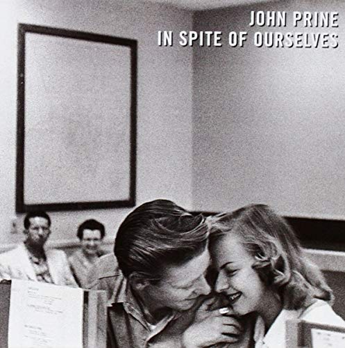 "He ain't got laid in a month of Sundays
I caught him once, and he was sniffin' my undies
He ain't too sharp, but he gets things done
Drinks his beer like it's oxygen
He's my baby, and I'm his honey
Never gonna let him go..."
Sold (The Grundy County Auction Incident)- John Michael Montgomery
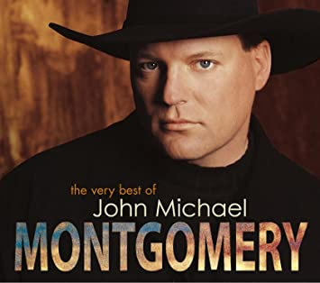 "And I said hey pretty lady won't you gimme a sign
I'd give anything to make you mine all mine
I'll do your biddin' and be at your beck and call
Yeah I've never seen anyone lookin' so fine
Man I gotta have her she's a one of a kind
I'm goin' once, goin' twice
I'm sold on the lady in the second row
She's an eight, she's a nine, she's a ten I know
She's got ruby red lips, blond hair, blue eyes
And I'm about to bid my heart goodbye..."
Helena- The Misfits
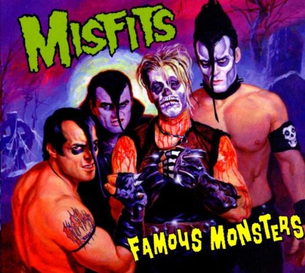 "If I cut off your arms and cut off your legs
Would you still love me anyway?
If you're bound and you're gagged, draped and displayed
Would you still love me, love me anyway?!"
No Children- The Mountain Goats
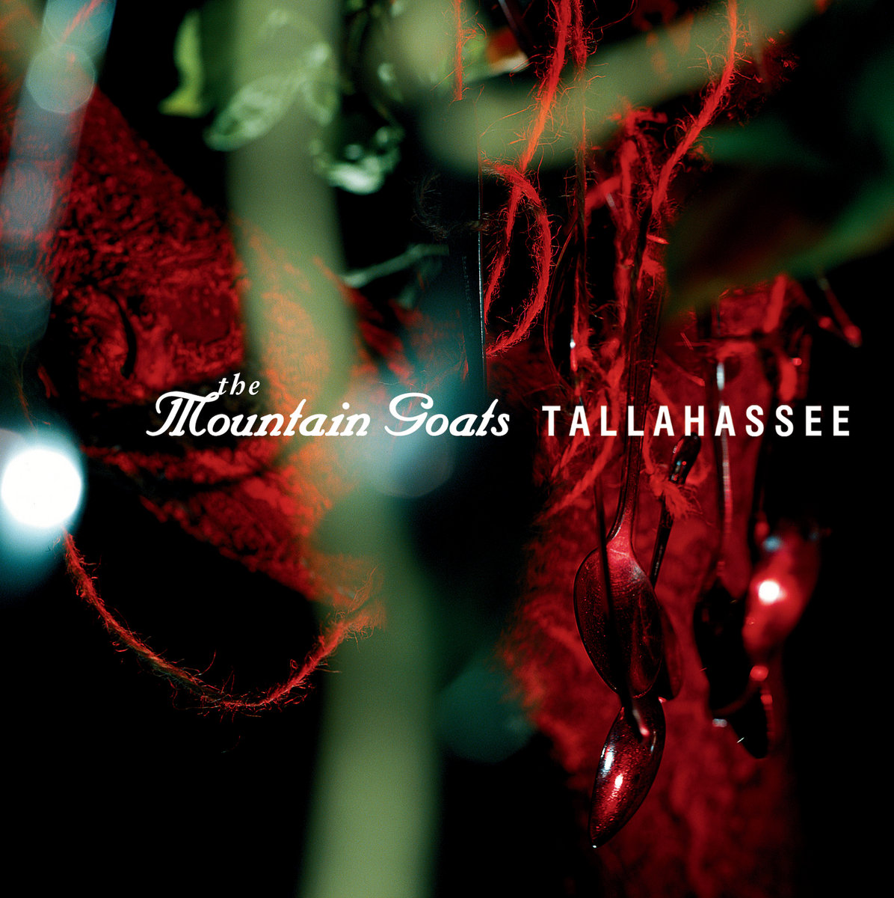 "In my life, I hope I lie
And tell everyone you were a good wife
And I hope you die
I hope we both die..."
Queen Of My Double Wide Trailer- Sammy Kershaw
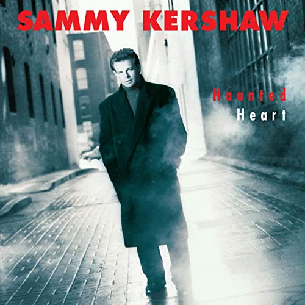 "And when them chicken fried steaks arrived
She said "I like livin' like this".
So I made her
The queen of my double wide trailer
With the polyester curtains and the redwood deck
Sometimes she runs off and I've gotta trail her
Dang her black heart and her pretty red neck"
All Your'n- Tyler Childers
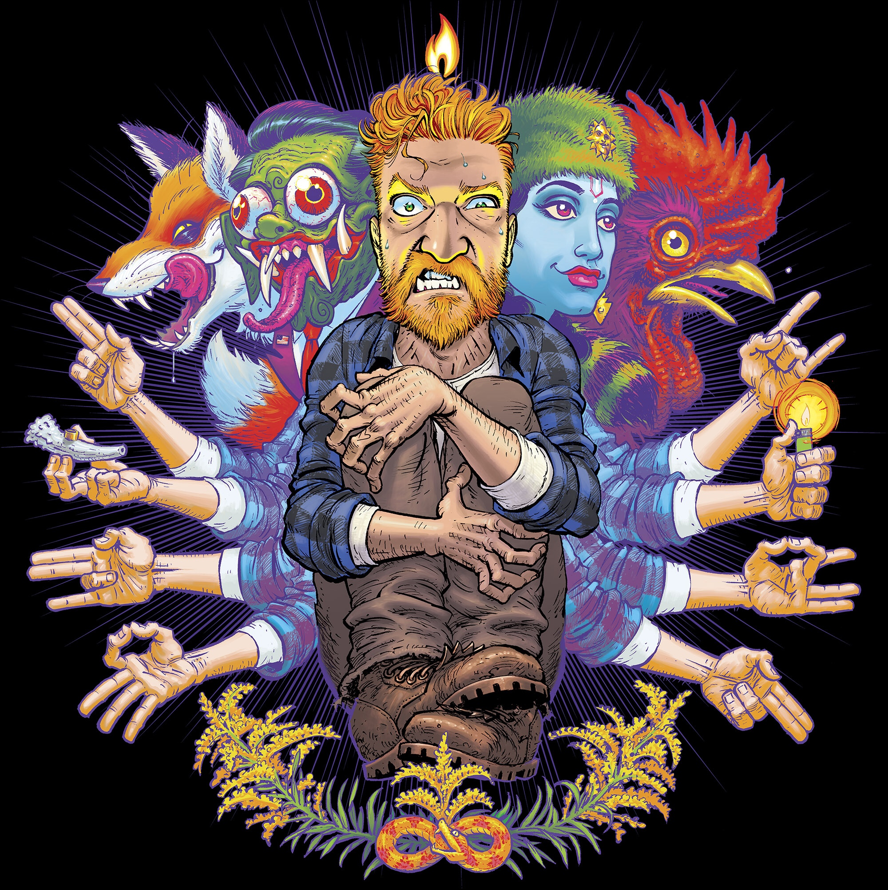 "So I'll love ya 'til my lungs give out
I ain't lying
I'm all your'n and you're all mine
There ain't two ways around it
There ain't no trying 'bout it
I'm all your'n and you're all mine"
Lady May- Tyler Childers
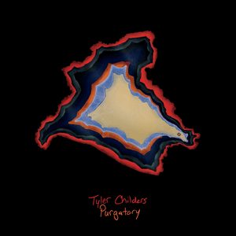 "Now I ain't the toughest hickory
That your ax has ever felled
But I'm a hickory just as well
I'm a hickory all the same
I came crashin' through the forest
As you cut my roots away
And I fell a good long ways
For my lovely Lady May"
Forever And Ever, Amen- Randy Travis
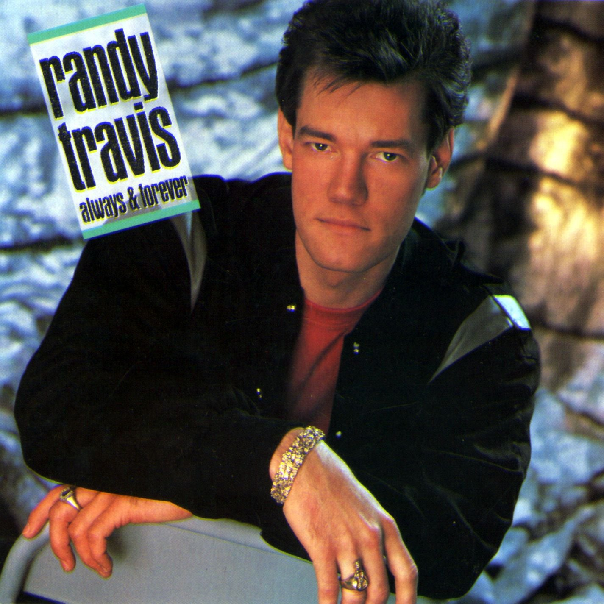 "As long as old men sit and talk about the weather
As long as old women sit and talk about old men
If you wonder how long I'll be faithful
I'll be happy to tell you again
I'm gonna love you forever and ever
Forever and ever, amen"
Deeper Than The Holler- Randy Travis
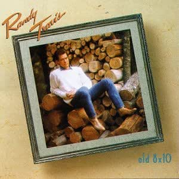 "My love is deeper than the holler
Stronger than the river
Higher than the pine trees growin' tall upon the hill
My love is purer than the snowflakes
That fall in late December
And honest as a Robin on a springtime window sill
And longer than the song of a whippoorwill"
Simple- Florida Georgia Line
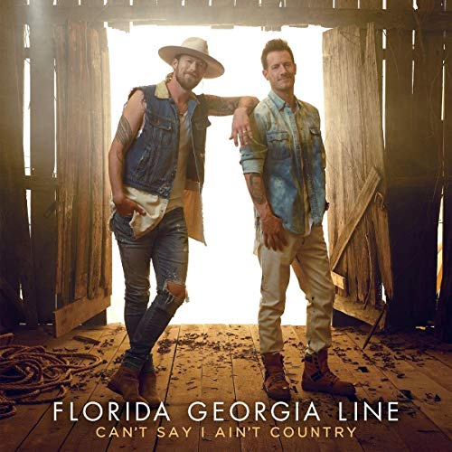 "The way your fingers fit in mine
It's five plus five, not rocket science
This day in time, that's hard to find
It's true
The road we're on ain't a traffic jam
It's a Sunday drive on a piece of land
It's paradise as long as I'm with you
It's like one, two, three
Just as easy as can be
Just the way you look at me
You make me smile"
Annie's Song- John Denver
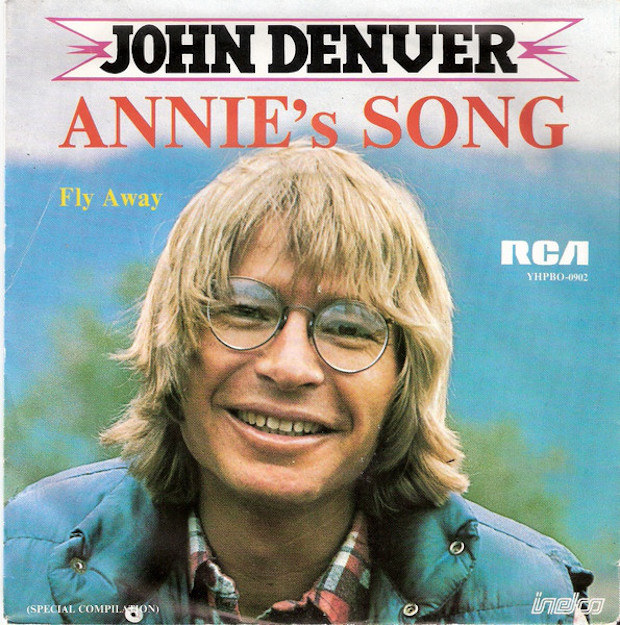 "You fill up my senses
Like a night in the forest
Like the mountains in springtime
Like a walk in the rain
Like a storm in the desert
Like a sleepy blue ocean
You fill up my senses
Come fill me again
Come let me love you
Let me give my life to you
Let me drown in your laughter
Let me die in your arms
Let me lay down beside you
Let me always be with you
Come let me love you
Come love me again"
Body Like A Back Road- Sam Hunt
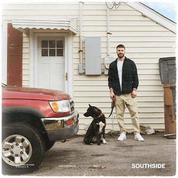 "The way she fit in them blue jeans
She don't need no belt
But I can turn 'em inside out
I don't need no help
Got hips like honey
So thick and so sweet (Man)
Ain't no curves like hers
On them downtown streets
Body like a back road
Drivin' with my eyes closed
I know every curve like the back of my hand
Doin' 15 in a 30
I ain't in no hurry
I'ma take it slow just as fast as I can
We're out here in the boondocks
With the breeze and the birds
Tangled up in the tall grass
With my lips on hers
On a highway to heaven
Headed south of her smile
Get there when we get there
Every inch is a mile"
Ain't No Sunshine (When She's Gone)- Bill Withers
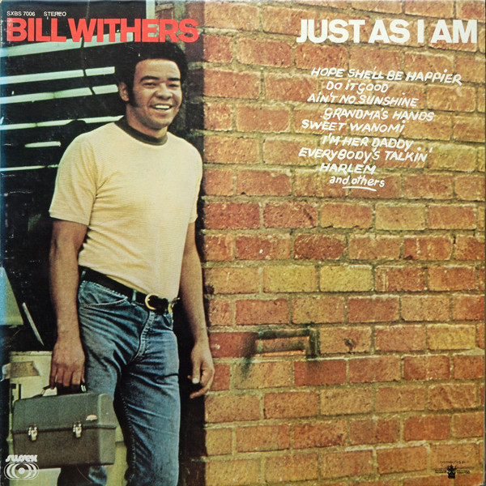 "Ain't no sunshine when she's gone
It's not warm when she's away
Ain't no sunshine when she's gone
And she's always gone too long
Anytime she's goes away
Wonder this time where she's gone
Wonder if she's gone to stay
Ain't no sunshine when she's gone
And this house just ain't no home
Anytime she goes away"
Perfect- Ed Sheeran
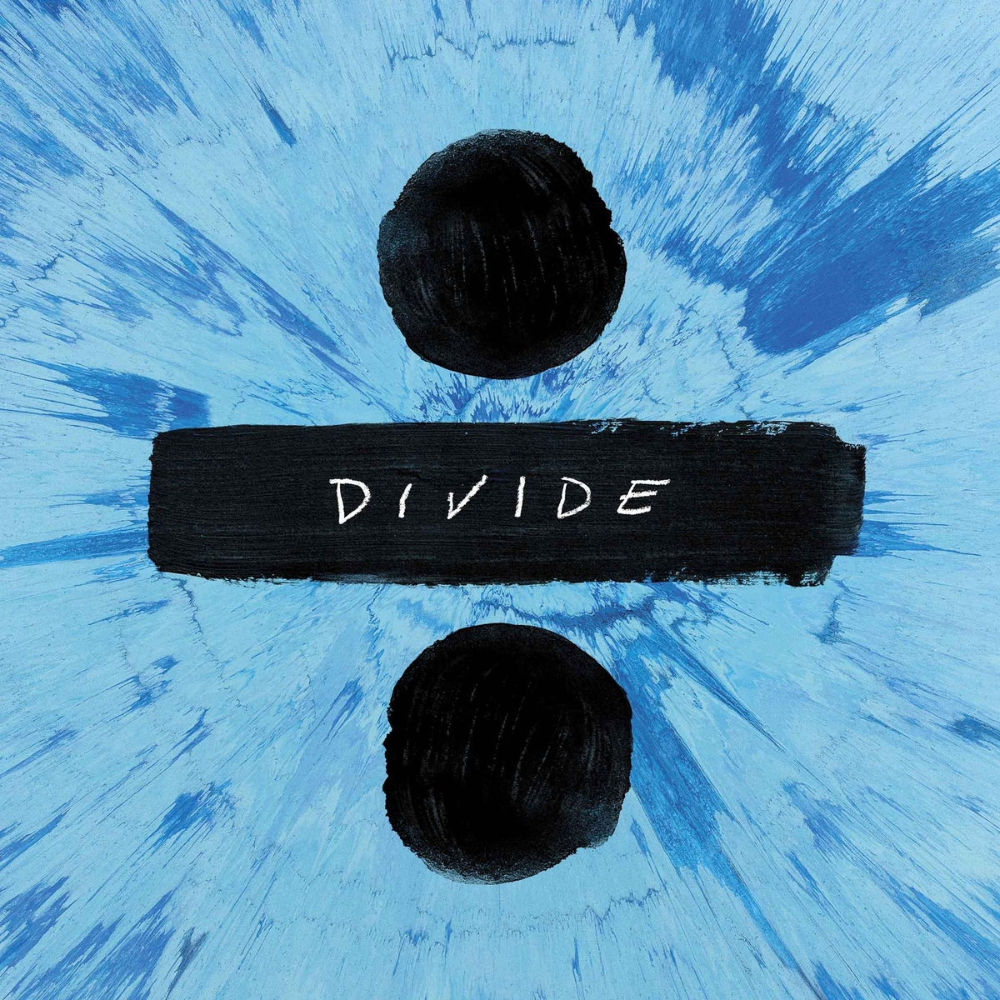 "Baby, I'm dancing in the dark, with you between my arms
Barefoot on the grass, listening to our favorite song
I have faith in what I see
Now I know I have met an angel in person
And she looks perfect
I don't deserve this
You look perfect tonight"
More Than Words- Extreme
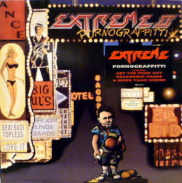 "Now that I've tried to
Talk to you and make you understand
All you have to do is close your eyes
And just reach out your hands
And touch me
Hold me close don't ever let me go
More than words
Is all I ever needed you to show
Then you wouldn't have to say
That you love me
'Cause I'd already know"
All Of Me- John Legend
"How many times do I have to tell you?
Even when you're crying, you're beautiful too
The world is beating you down, I'm around
Through every mood
You're my downfall, you're my muse
My worst distraction, my rhythm and blues
I can't stop singing, it's ringing
In my head for you
My head's under water, but I'm breathin' fine
You're crazy and I'm out of my mind
'Cause all of me
Loves all of you
Love your curves and all your edges
All your perfect imperfections
Give your all to me
I'll give my all to you
You're my end and my beginnin'
Even when I lose, I'm winnin'"
You're Still The One- Shania Twain
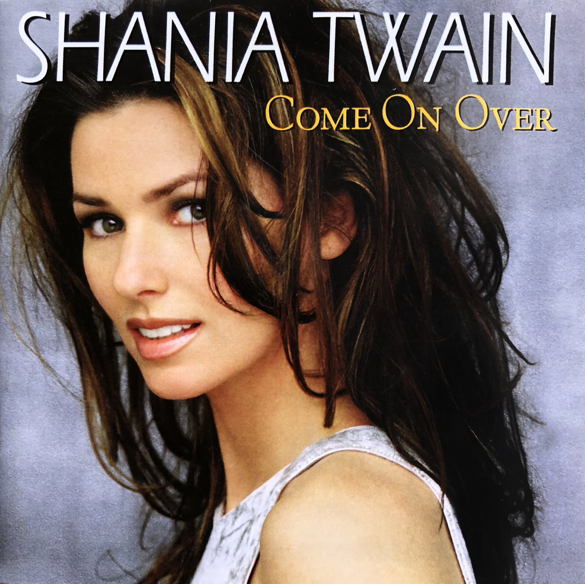 "When I first saw you, I saw love
And the first time you touched me, I felt love
And after all this time
You're still the one I love, mmm, yeah-yeah
Looks like we made it
Look how far we've come, my baby
We mighta took the long way
We knew we'd get there someday
They said, "I bet they'll never make it"
But just look at us holding on
We're still together, still going strong
You're still the one I run to
The one that I belong to
You're still the one I want for life
(You're still the one)
You're still the one that I love
The only one I dream of
You're still the one I kiss goodnight"